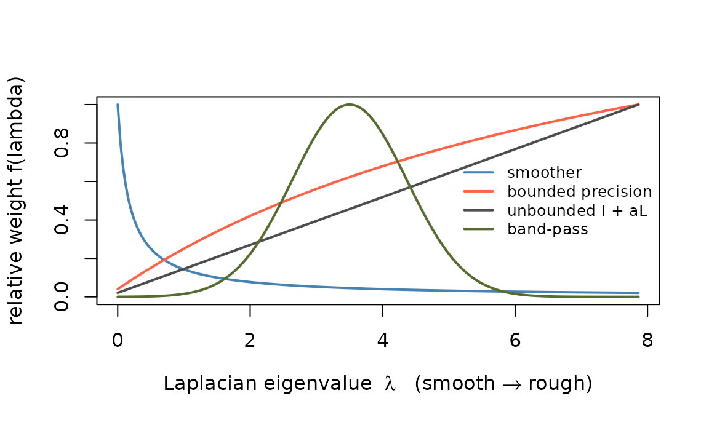

The problem
Real data rarely offers a clean choice. An fMRI run has smooth signal (distributed networks), smooth noise (drift, vascular and physiological fluctuation), rough noise (thermal), and sometimes rough signal (focal activation, tissue boundaries) — all at once. The obvious question is which metric to reach for, and the honest answer is that the choice is better-defined than it looks in some cases and impossible in others.
This vignette works out which is which. Every number below is produced by the code shown.
A metric is a spectral filter
Build a graph over your variables — voxels adjacent in space, time points adjacent in a series — and take its Laplacian . The eigenvectors of are a Fourier basis for that graph: small eigenvalues are smooth patterns, large eigenvalues are rough ones. Then any metric of the form
is a filter, and is its transfer function. That single observation covers every recipe in this package.
g <- 12; p <- g * g; n <- 150
gi <- expand.grid(r = 1:g, c = 1:g)
W <- matrix(0, p, p)
for (i in 1:p) for (j in 1:p)
if (i < j && abs(gi$r[i] - gi$r[j]) + abs(gi$c[i] - gi$c[j]) == 1) {
W[i, j] <- 1; W[j, i] <- 1
}
L <- diag(rowSums(W)) - W
eL <- eigen(L, symmetric = TRUE)
Q <- eL$vectors
lam <- pmax(eL$values, 0)
# build a metric from a transfer function of the Laplacian
spec <- function(f) Q %*% (f(lam) * t(Q))Note that eigen() returns eigenvalues in
decreasing order, so Q[, 1] is the roughest graph
mode and Q[, p] the smoothest. Getting this backwards is an
easy way to convince yourself of something false.

Four transfer functions on the same graph. Everything to the left of the crossing is smooth structure; everything to the right is rough. A metric multiplies the decomposition’s attention by this curve.
So the practical vocabulary is not “adjacency versus Laplacian” — those are just two points on this continuum. You are choosing a curve.
Building these matrices in practice
You rarely have to assemble a graph by hand. The adjoin package
constructs weighting matrices from coordinates or from the data itself,
and supplies both orientations directly:
spatial_adjacency(), spatial_smoother(),
heat_kernel() and graph_weights() on the
smoother side; spatial_laplacian() and
temporal_laplacian() on the precision side, with
temporal_adjacency() for the time margin.
cds <- as.matrix(expand.grid(x = 1:8, y = 1:8))
Aadj <- adjoin::spatial_adjacency(cds, nnk = 8, weight_mode = "heat", sigma = 1.5)
Alap <- adjoin::spatial_laplacian(cds, nnk = 8, weight_mode = "heat", sigma = 1.5)
# check the two traps before using either as a metric
range(eigen(as.matrix(Aadj), symmetric = TRUE, only.values = TRUE)$values)
#> [1] -0.1882372 1.0065493
range(eigen(as.matrix(Alap), symmetric = TRUE, only.values = TRUE)$values)
#> [1] 4.676095e-16 1.490016e+00Both traps from the previous section show up in real output. The
adjacency comes back indefinite — its smallest
eigenvalue is negative, so it is not a metric until you shift it
(Aadj + c * Diagonal(n)) or let
constraints_remedy repair it. The Laplacian comes back
PSD but exactly singular, its null vector being the
spatially constant pattern; genpca() accepts that via a
pseudo-inverse, but Alap + eps * Diagonal(n) is usually
what you want. Neither is a defect in adjoin — an adjacency
matrix simply is not positive definite, and that is a property of
graphs, not of the software.
With those repairs, the two point in the directions the table above predicts: used as a column metric, the adjacency produces markedly smoother loadings than plain PCA and the Laplacian markedly rougher ones.
What a metric can and cannot separate
Here is the part that decides everything. A spatial metric reweights by spatial frequency, and by nothing else. It can therefore separate signal from noise exactly when the two occupy different parts of the spectrum.
We plant a signal of known spatial character in noise of known spatial character, and measure how well the leading component recovers it.
nrm <- function(v) v / sqrt(sum(v^2))
# how much of the planted pattern is captured by the fitted subspace?
recov <- function(V, truth) {
V <- qr.Q(qr(as.matrix(V)))
sqrt(sum((t(V) %*% truth)^2)) / sqrt(sum(truth^2))
}
smooth_pat <- nrm(exp(-((gi$r - 4)^2 + (gi$c - 4)^2) / 6)) # a blob
fine_pat <- nrm(Q[, which.min(abs(lam - median(lam)))]) # a mid-frequency mode
smooth_noise <- function(n) {
Z <- matrix(rnorm(n * p), n, p) %*% spec(function(l) sqrt(1 / (1 + 4 * l)))
Z / sqrt(mean(Z^2))
}
fine_noise <- function(n) {
Z <- matrix(rnorm(n * p), n, p) %*% spec(function(l) sqrt((l + .5) / max(lam)))
Z / sqrt(mean(Z^2))
}
A_smoother <- spec(function(l) 1 / (1 + 6 * l))
A_precision <- spec(function(l) 1 / (0.02 + 1 / (1 + 6 * l)))
set.seed(909)
reps <- 8
grid <- expand.grid(signal = c("smooth", "fine"), noise = c("smooth", "fine"),
stringsAsFactors = FALSE)
out <- t(apply(grid, 1, function(row) {
pat <- if (row[["signal"]] == "smooth") smooth_pat else fine_pat
acc <- c(0, 0, 0)
for (r in seq_len(reps)) {
E <- if (row[["noise"]] == "smooth") smooth_noise(n) else fine_noise(n)
X <- scale(matrix(rnorm(n), n, 1) %*% t(pat) * 1.1 + E, scale = FALSE)
for (k in 1:3) {
A <- list(diag(p), A_smoother, A_precision)[[k]]
fit <- genpca(X, A = A, ncomp = 1, preproc = multivarious::pass())
acc[k] <- acc[k] + recov(fit$ov, pat) / reps
}
}
acc
}))
dimnames(out) <- list(paste(grid$signal, "signal /", grid$noise, "noise"),
c("identity", "smoother", "precision"))
round(out, 3)
#> identity smoother precision
#> smooth signal / smooth noise 0.437 0.495 0.336
#> fine signal / smooth noise 0.031 0.023 0.573
#> smooth signal / fine noise 0.058 0.733 0.035
#> fine signal / fine noise 0.144 0.200 0.063Read the rows. When signal and noise sit in different bands, the matching metric is transformative — better than tenfold in both mismatched rows: the smoother rescues a smooth signal from fine noise, and the precision rescues a fine signal from smooth noise, in each case lifting recovery from near-zero to roughly 0.6–0.7. Note also that in those rows the wrong metric is no better than identity and sometimes worse, so the gain is genuinely about matching the filter to the gap between signal and noise.
When signal and noise sit in the same band, the picture changes completely: all three columns land in the same range, with no metric delivering anything like the off-diagonal gain. There is no filter that separates two things occupying the same frequencies.
| smooth noise | fine noise | |
|---|---|---|
| smooth signal | no metric helps | smoother |
| fine signal | precision | no metric helps |
This is the answer to “my data has all four at once.” Decompose the problem by band, not by wish. The components of the noise that differ spectrally from your signal can be suppressed by ; the components that overlap it cannot, and pretending otherwise just costs you signal.
Whiten by the noise, not by the signal
The rule for choosing follows from the model rather than from taste. Under separable noise, makes GPCA the maximum-likelihood low-rank fit, so the metric is determined by the noise, whatever the signal happens to look like.
For a realistic two-component noise model — smooth physiological fluctuation plus broadband thermal noise —
which is the “bounded precision” curve in the first figure. It suppresses the smooth band where the physiological noise lives and then flattens out at instead of growing without limit. Two knobs, both with physical meaning, both estimable from resting or baseline data.
Estimate them from data that does not contain your effect — a baseline run, or the residuals after removing the design — rather than from the data you are about to decompose.
Bounded beats unbounded
The reason to insist on that flattening: an unbounded metric such as keeps increasing with , so it places its largest weight on the very roughest directions. That is precisely where thermal noise lives and where signal generally does not.
A_unbounded <- spec(function(l) 1 + 6 * l)
set.seed(78)
acc <- c(0, 0, 0); reps <- 8
for (r in seq_len(reps)) {
X <- scale(matrix(rnorm(n), n, 1) %*% t(fine_pat) * 1.1 +
smooth_noise(n) * 0.8 +
matrix(rnorm(n * p), n, p) * 0.8, scale = FALSE) # + thermal
for (k in 1:3) {
A <- list(diag(p), A_precision, A_unbounded)[[k]]
fit <- genpca(X, A = A, ncomp = 1, preproc = multivarious::pass())
acc[k] <- acc[k] + recov(fit$ov, fine_pat) / reps
}
}
setNames(round(acc, 3), c("identity", "bounded precision", "unbounded I + 6L"))
#> identity bounded precision unbounded I + 6L
#> 0.042 0.552 0.456Both precisions beat plain PCA by a wide margin, and the bounded one comes out ahead: once broadband thermal noise is in the mixture, spending unlimited weight at the top of the spectrum buys noise rather than signal. The margin here is modest because the planted signal is only mid-frequency; it widens as the thermal component grows or as the signal sits further from the top of the spectrum. Prefer the saturating form — its worst case is bounded, and the unbounded one has no worst case at all.
Use both margins
The cases the table above marks “no metric helps” are not hopeless —
they are just not solvable in space. A smooth task response and
a smooth drift are indistinguishable by spatial frequency, but they are
utterly different in time. That is what the row metric is for, and it is
why M and A are separate arguments rather than
one blended constraint.
Here the noise is temporally autocorrelated, the signal is task-locked at a frequency where that noise has little power, and the row metric is the AR(1) precision — the same prewhitening used in a standard fMRI GLM.
rho <- 0.85
Sig_t <- outer(0:(n - 1), 0:(n - 1), function(i, j) rho^abs(i - j))
M_ar <- solve(Sig_t + 1e-6 * diag(n))
task <- scale(sin(2 * pi * (1:n) / 7))
set.seed(303)
acc <- c(0, 0); reps <- 8
for (r in seq_len(reps)) {
E <- t(chol(Sig_t)) %*% matrix(rnorm(n * p), n, p) # AR(1) in time
X <- scale(task %*% t(smooth_pat) + E, scale = FALSE)
acc[1] <- acc[1] + recov(genpca(X, ncomp = 1,
preproc = multivarious::pass())$ov, smooth_pat) / reps
acc[2] <- acc[2] + recov(genpca(X, M = M_ar, ncomp = 1,
preproc = multivarious::pass())$ov, smooth_pat) / reps
}
setNames(round(acc, 3), c("no row metric", "AR(1) precision M"))
#> no row metric AR(1) precision M
#> 0.069 0.733Roughly a tenfold improvement on the same data, with the column metric left as identity throughout. The temporal structure did the work that no spatial metric could.
The practical consequence for imaging: put temporal nuisances on
M (AR prewhitening, down-weighting motion-corrupted frames)
and spatial nuisances on A, and regress out what is better
removed by design — drift terms, physiological regressors — before
decomposing at all.
When one metric is not enough
A single applies one filter to every component. If your data contains a smooth network component and a focal artifact, no single choice serves both. Two escape routes:
-
sfpca()selects a sparsity penalty per component by BIC, so different components can have different spatial extent. Note its structure argument is a constraint, , so you pass the roughness operator directly and largeralpha_vmeans smoother — the opposite convention to a metric. -
gpca_mle()andmnpca_mrl()learnMandAfrom the data by penalized maximum likelihood instead of asking you to specify them, the latter with sparse precision matrices.
Caveats worth carrying
Separability is an approximation. The whole framework assumes noise covariance factorizes as . That is fair for thermal noise and for correlation induced by smoothing. It is not fair for cardiac and respiratory noise, which is spatially localized near vessels and ventricles and temporally periodic; that structure violates the Kronecker form rather than being absorbed by it.
Whitening does not create signal. Equalizing the noise floor changes which directions dominate the decomposition; it does not change the signal-to-noise ratio within any direction. A signal below the noise in its own band stays below it.
Validate on your own data. Every number here comes from a simulation whose ground truth we chose. Sweep the strength of your metric, look at the loadings, and confirm the components move the way you expect before believing a result that depends on the metric.
Where next
-
vignette("gpca-metrics")— concrete recipes and the smoother/precision orientation rule. -
vignette("genpca")— the decomposition itself, and what the metrics mean geometrically. -
vignette("gpca-scale")— backends for when these metrics get large.